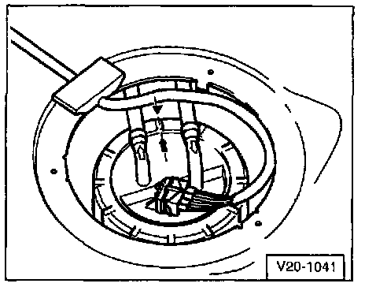

Fuel Pump: Service and Repair
Fuel Pump (FP) Module:Removing:
- Observe safety precautions. Service Precautions
- Ignition switched OFF.
CAUTION: Before disconnecting battery, ALWAYS ask for radio code (it equipped with an anti-Theft radio).
- Disconnect battery Ground (GND) strap.
- Remove cover in luggage compartment floor.

- Disconnect 4-pin connector, fuel supply line and fuel return line from flange.
- Remove flange cap nut with tool 3217.
- Remove flange and sealing ring from fuel tank opening.
- Observe safety precautions. Service Precautions
NOTE: If the Fuel Pump (FP) Module is still filled with fuel, empty before replacing.
Installing:
Install Fuel Pump (FP) Module in reverse order of removal.
NOTE:
- When installing the Fuel Pump Module, be sure that the arm for Fuel Level Sensor (G) is not bent.
- When unit is correctly assembled, the Fuel Level Sensor float points forward at angle -alpha- to vehicle direction of travel -A-.

- alpha = 5°.
- Lubricate flange seal with gasoline for assembly.
Fig. 1:

- Installation position of flange cap Fuel Pump (FP) Module.
- Marking on flange must align with marking on fuel tank -arrows-.